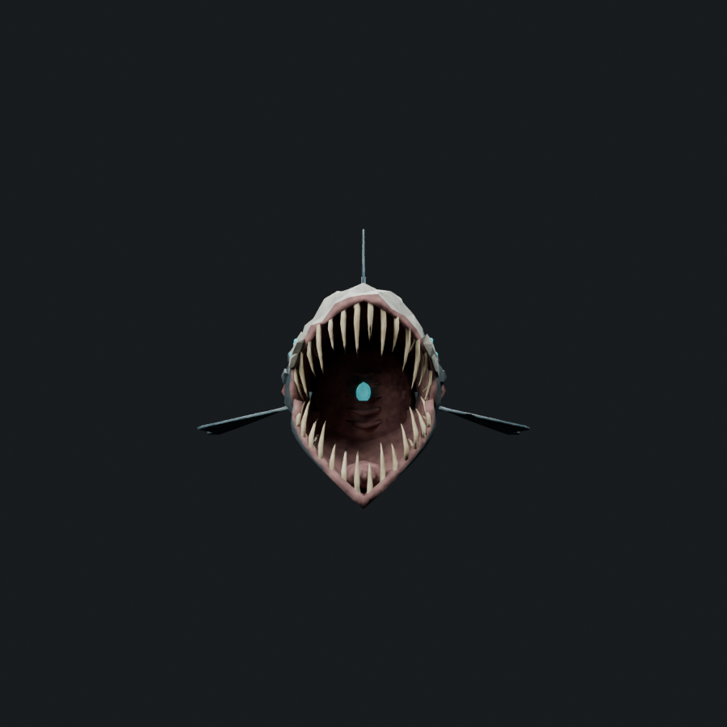
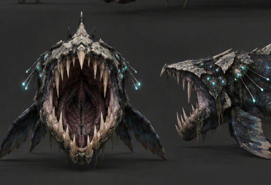
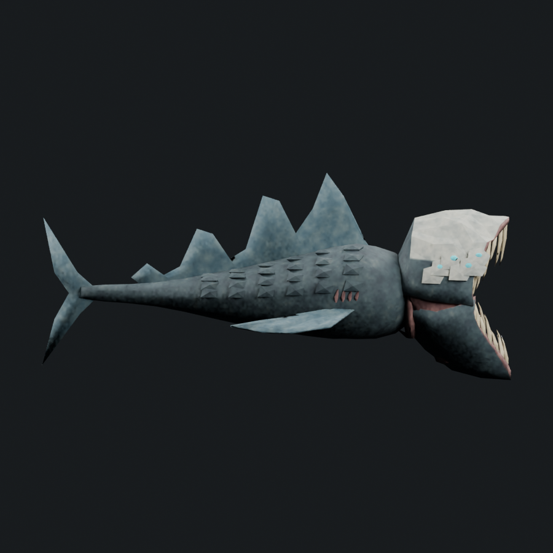
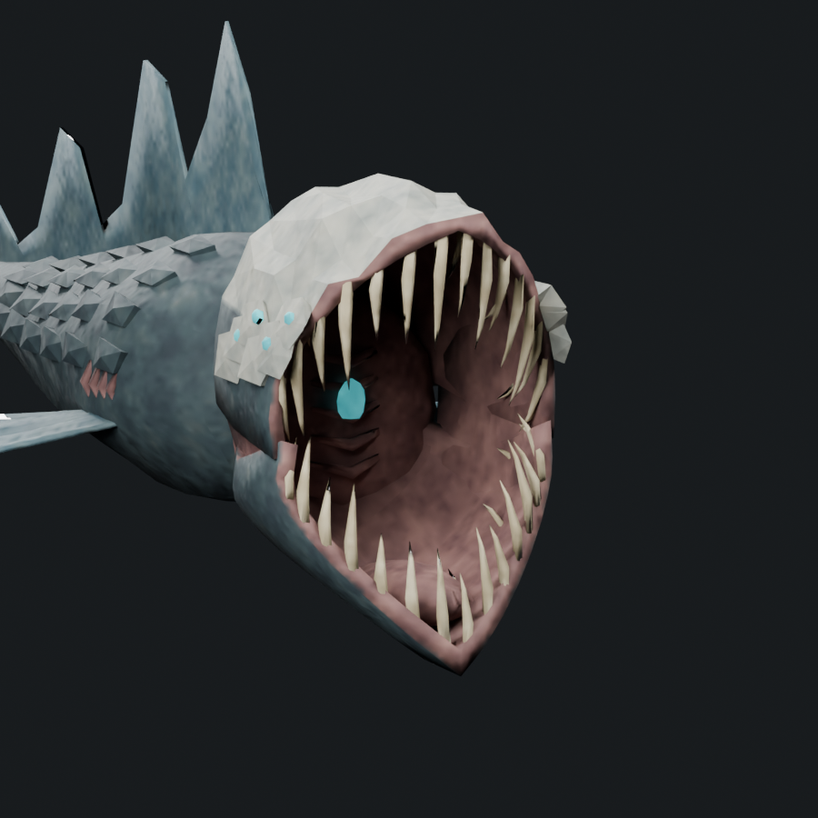
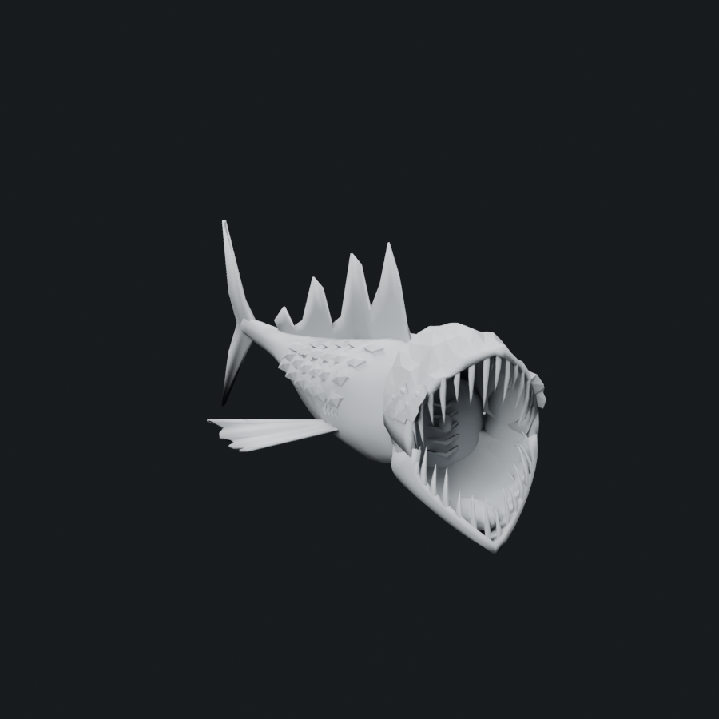
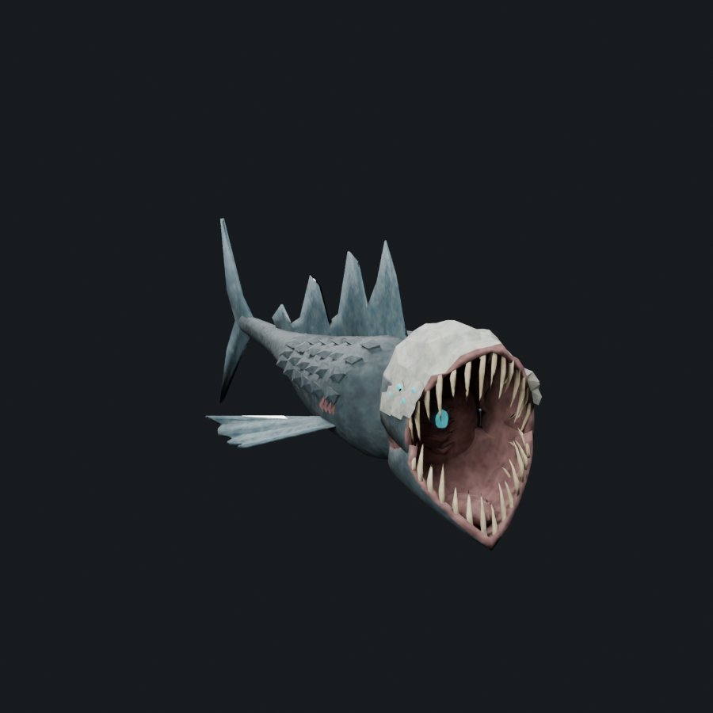
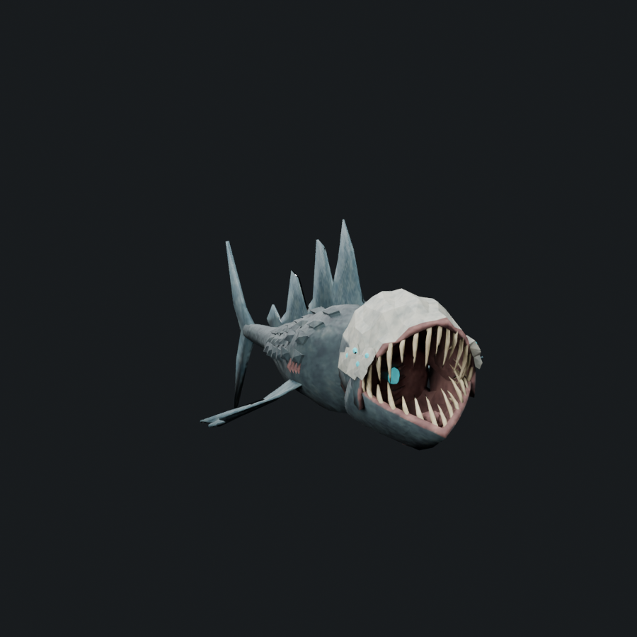

The frontal mouth is a tall tapered oval, with a peaked upper brow and a pointed lower-jaw chin. The upper and lower tooth beds curve back toward the cheek hinges; the lower jaw projects as a separate U-shaped structure in profile. The palate is broad rather than a long flared funnel. A raised mouth floor, fleshy posterior wall and throat folds form the interior between the jaws.
6,412 triangles · 1.316× native Serpent · soft cap 7,308
7,140 before trimming; 728 wholly buried triangles removed. One mesh, one material, four 512px atlas maps and at most two normalized bone influences per vertex. 10 m art-study length.
155 saved attachment records pass, including 65 sampled poses across 13 retained actions. Contact checks retain a one-millimetre tolerance and confirm ambiguous ray hits with an independent closed-support winding query. This remains an uninstalled art candidate; every-frame animation, native runtime/performance and final concept-detail acceptance remain pending.









